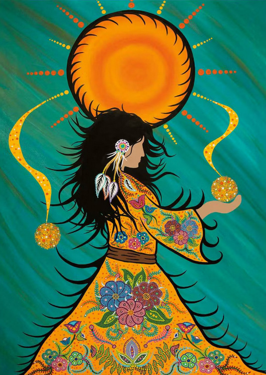

Resources
This page brings together selected public-facing resources that support further learning about Indigenous storytelling and pedagogy. The resources below include Indigenous-led organizations, educational websites, language revitalization platforms, publishers, and reconciliation-focused teaching materials.
The goal of this page is not to be exhaustive, but to offer practical starting points for educators, students, and readers who want to continue learning in respectful and meaningful ways.
This page focuses on community and educational resources. For full scholarly citations used across the website, please visit the References page.

Community and Educational Organizations
-
Assembly of First Nations – It’s Our Time Education Toolkit
Digital education resources that support learning about First Nations histories, cultures, treaties, and residential schools. -
National Centre for Collaboration in Indigenous Education (NCCIE)
A national portal sharing stories, resources, and examples of Indigenous education across regions and communities. -
First Nations Education Steering Committee (FNESC) – Authentic First Peoples Resources
Guidance to help educators choose respectful and appropriate learning materials that reflect First Peoples’ perspectives. -
Inuit Tapiriit Kanatami (ITK)
National Inuit organization with public information and resources related to Inuit education, language, culture, and wellbeing. -
Métis Settlements General Council
Information and community resources connected to Métis Settlements culture, history, and governance. -
Native Women’s Association of Canada (NWAC)
Resources and perspectives that highlight the voices of Indigenous women, girls, and gender-diverse people. -
The Martin Family Initiative (MFI)
Shares educational initiatives and promising practices that support Indigenous student success and wellbeing. -
Native Child and Family Services of Toronto
A culturally grounded urban Indigenous organization supporting children, youth, and families, including early learning services.
Digital and Interactive Learning Resources
-
Four Directions Teachings
An interactive audio-based resource that shares teachings and perspectives from diverse Indigenous knowledge keepers. -
Indigenous Storywork
Supports educators in understanding storytelling as a holistic, relational, and respectful pedagogical approach. -
Indigenous Education in Ontario
Ontario government information and public resources related to Indigenous education. -
TVO Learn
Ontario-aligned learning resources that can be explored alongside Indigenous education topics and classroom extensions.
Storytelling and Language Revitalization
-
First Peoples’ Cultural Council (FPCC)
Language, arts, culture, and heritage resources that support revitalization and community learning. -
FirstVoices
A platform where Indigenous communities share and promote their languages, oral culture, and linguistic history. -
National Film Board of Canada – Indigenous Cinema
A collection of Indigenous-made films that can support visual storytelling, discussion, and reflection.
Books, Publishers, and Public Educational Materials
-
Strong Nations
An Indigenous-owned publisher and bookstore offering books and learning materials for children, educators, and families. -
GoodMinds.com
A First Nations family-owned source for Indigenous books, teaching materials, and classroom resources. -
Gabriel Dumont Institute – Métis Culture and Publishing
Métis-specific books, archives, lesson materials, and cultural resources. -
HighWater Press / Portage & Main Press
A Canadian publisher known for award-winning books by Indigenous writers, including resources relevant to classrooms and readers.
Pedagogical Guides
-
First Peoples Principles of Learning
A framework that emphasizes holistic, relational, experiential, and place-based approaches to learning. -
Learning Bird – Circles and Stories
Practical ideas for bringing oral storytelling and listening practices into classroom contexts. -
Indigenous Storywork: Educating the Heart, Mind, Body, and Spirit
Jo-ann Archibald’s foundational work on storytelling, learning, and Indigenous pedagogies.
Teaching Tools and Reconciliation Resources
-
National Centre for Truth and Reconciliation – Education
Teaching materials and public resources related to residential schools, truth, and reconciliation. -
Legacy of Hope Foundation
Educational resources, exhibitions, and curriculum materials related to the history and legacy of residential schools. -
The Gord Downie & Chanie Wenjack Fund – Resources
Learning materials that support awareness, cultural understanding, and reconciliation.
How These Resources Can Be Used
These resources can support educators in choosing authentic materials, learning from Indigenous-led organizations, exploring language revitalization, and approaching storytelling with greater care and responsibility.
They can also help readers move beyond viewing stories as simple classroom tools and instead understand storytelling as connected to relationships, identity, culture, community, and place.